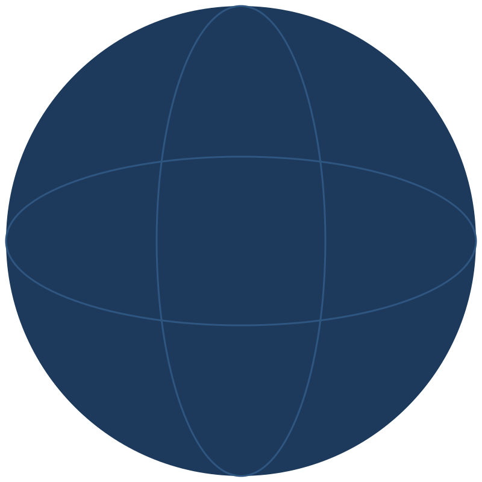
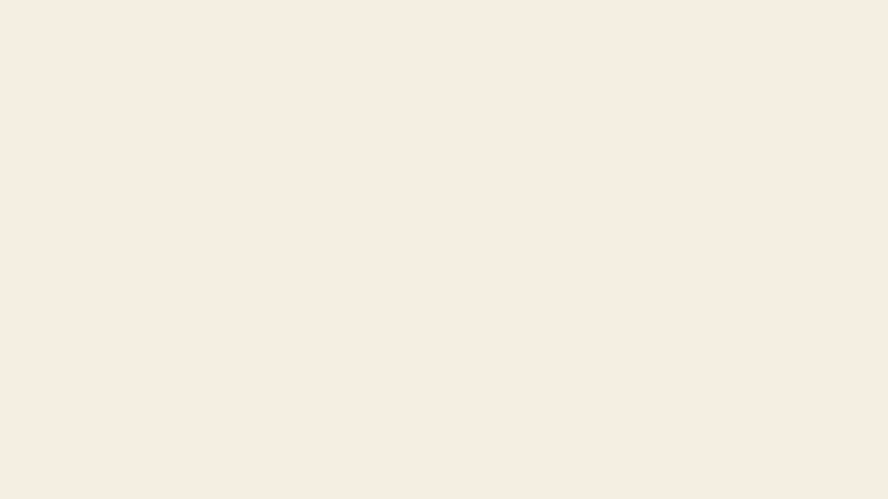

A note shown as a fragment
Dark ink on the bright part of the picture
Light small type over the busy part
Light small type on a dark scrim
Light small type with a dense dark halo
A last line measured from the canvas
A caption centered on its anchor, unbounded
A caption centered on its anchor, unbounded
White type in a group at 40 percent opacity
White type in a group at 55 percent opacity
White type under a dark overlay at 60 percent
White type with a dark overlay on its left half only
A hairline caption in mid gray on white, set small and light
A caption a hair under the AA bar on white
White type with a picture stacked over the middle of it

Gray type dimmed to half once its step has passed
A note shown only while it is current
A caption arriving at the same step
A last caption well clear of the rest
A caption that is on the slide from the start
A caption that rises into place
White type on a bright slide background